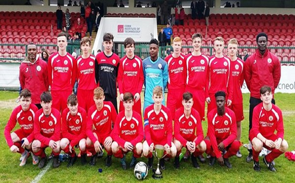
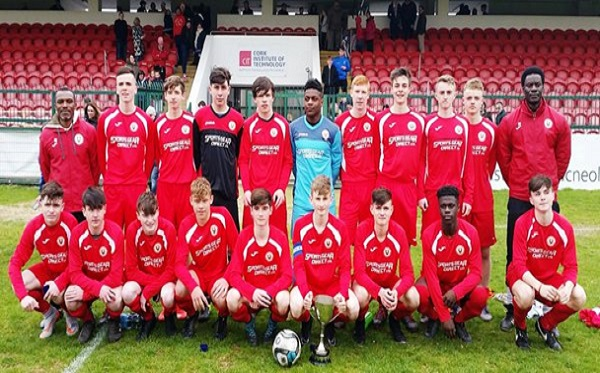

I love sport and very sporty individual. I have played many sports which include Gaa, Rugby, Golf, Basketball, Tennis. I have also done Athletics and Horse Riding. I currently play soccer for Cork City FC in the Airtricity u19 League Of Ireland. I play primarily as a centre back but i can also play in midfield. I have a great interest in all types of sports and enjoy watching all types of sport also. I also have a great interest in sports coaching. I am a qualified Soccer Coach with an FAI National D License. I also currently work as a Sport and Activities Coach in PALs After School coaching children mainly soccer
I currently play soccer for Cork City FC in the Airtricity u19 League Of Ireland. I play primarily as a centre back but I can also play in midfield. I played my Schoolboys Football with Lakewood Athletic in Ovens, Cork and a half a season of Youths with Ringmahon Rangers. I had great success with Lakewood, winning the u15 Local Cup and also reaching a National Cup Semi-Final all the while captaining the side. I have also represented Cork at Schoolboys level from u12 to u16 before joining Cork City FC in 2017. In joining Cork City I managed to win the u17 League of Ireland in my first season while also Captaining the side. I currently play for Cork City FC u19s. The soccer team that I support is Manchester United
 
